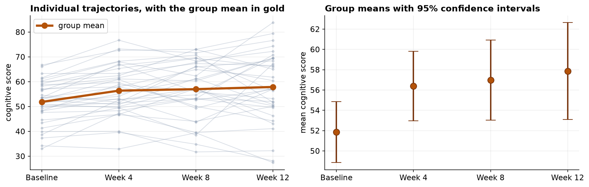
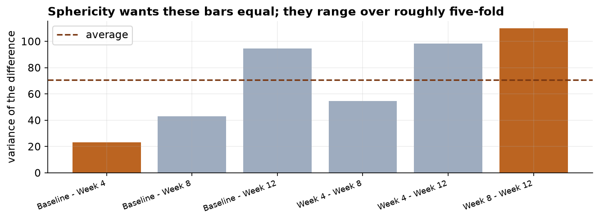
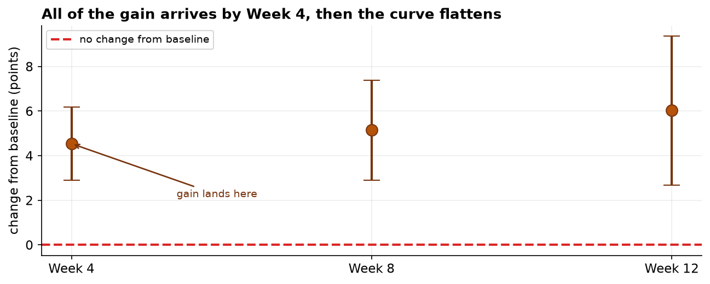

Capstone 5 compared three separate groups of students. This one compares four measurements of the same people. That pairing is powerful, for the reason the paired t-test was powerful in Capstone 3: person-to-person differences cancel out. But with more than two conditions, a new condition has to hold, and here it does not.
Scores did improve, and the result survives correction: F(2.12, 72) = 7.16, corrected p = 0.001. But the shape matters more than the fact. Participants gained about 4.5 points in the first four weeks and then plateaued: Weeks 8 and 12 are statistically indistinguishable from Week 4. And 7 of 42 participants had to be dropped, which is its own warning.
The Question and the Design
A twelve-week cognitive-training program assessed the same participants at Baseline, Week 4, Week 8, and Week 12. The question is whether scores change over the program, and, just as usefully, when.
| Framework step | This project |
|---|---|
| Goal | Decide whether mean cognitive score changes across four timepoints, and locate the change. |
| Hypotheses | H₀: all four timepoint means are equal vs H₁: at least one differs. α = 0.05. |
| Data type | Continuous outcome across a four-level within-subject factor. |
| Design | One-way repeated measures: every participant contributes all four scores. |
Complete Cases Only, and What That Costs
A repeated-measures ANOVA can only use participants with a full set of measurements: one missing assessment and the whole person drops out of the analysis. After removing duplicate rows, blank scores, and impossible values, and then filtering to complete cases, 42 enrolled participants became 35. Those 7 exclusions are not a rounding detail, and Section 6 returns to why.

| Timepoint | n | Mean | SD | Change from baseline |
|---|---|---|---|---|
| Baseline | 35 | 51.84 | 8.73 | — |
| Week 4 | 35 | 56.38 | 10.00 | +4.54 |
| Week 8 | 35 | 56.99 | 11.49 | +5.14 |
| Week 12 | 35 | 57.87 | 13.90 | +6.02 |
Read the SD column as carefully as the mean column. The spread grows steadily, from about 8.7 at Baseline to 13.9 at Week 12. That growth is what breaks the assumption we check next.
Sphericity: the Assumption That Only Appears Now
With two conditions there is exactly one difference to compute, so there is nothing to compare it with. With four conditions there are six pairwise differences, and repeated-measures ANOVA assumes they are all equally variable. That is sphericity. When later measurements spread out more than earlier ones, differences involving those later points become more variable than the rest, and the assumption fails.
The notebook makes this concrete by computing all six difference variances directly. They range from about 23 to 110, nearly a five-fold spread, and Mauchly's test rejects sphericity decisively.

An uncorrected repeated-measures F test with unequal difference variances is too liberal: it reports a smaller p-value than the evidence justifies, and so finds effects that are not there. The fix is not a different test but a correction to the degrees of freedom, which makes the test appropriately more conservative.
Correct the Test, Then Read the Shape
The Greenhouse-Geisser correction multiplies the degrees of freedom by epsilon, a measure of how far the data depart from sphericity. Epsilon is 1 when sphericity holds perfectly and shrinks as the violation worsens. Here ε = 0.71, which pulls the degrees of freedom from (3, 102) down to about (2.12, 72) and moves the p-value from 0.0002 to 0.0012.
So something changed. The post-hoc comparisons, Holm-corrected across all six pairs, say what:
| Comparison | Hedges' g | Adjusted p | Verdict |
|---|---|---|---|
| Baseline vs Week 4 | −0.48 | < 0.0001 | real gain |
| Baseline vs Week 8 | −0.50 | 0.0002 | real gain |
| Baseline vs Week 12 | −0.51 | 0.0034 | real gain |
| Week 4 vs Week 8 | −0.06 | 1.00 | no further gain |
| Week 4 vs Week 12 | 0.12 | 1.00 | no further gain |
| Week 8 vs Week 12 | 0.07 | 1.00 | no further gain |
The pattern is unambiguous: every comparison against Baseline is significant, and no comparison among Weeks 4, 8, and 12 comes close. All of the measurable benefit arrives in the first month.

The Verdict, and the Attrition Problem
Cognitive scores improved, and the improvement holds up after correcting for a genuinely violated assumption. The practical reading is about timing: the program earns its result in the first four weeks, and the remaining eight weeks add nothing detectable. Generalized eta-squared of about 0.04 is a modest share of total variation, so this is a real but not transformative effect.
Seven of forty-two participants were dropped for incomplete data. If people left the program because they were not improving, then the analysis kept the responders and discarded the non-responders, and the reported gain is too optimistic. No statistical test detects this; it is a property of who is missing, not of the numbers that remain.
- Check the dropouts before believing the result. Compare the excluded participants to the completers on baseline score and early change. If they started lower or were flat by Week 4, the estimate is biased upward. A linear mixed-effects model is the standard remedy, because it can use partial records instead of discarding whole people.
- No control group. As in Capstone 3, a single arm measured repeatedly cannot separate the program from practice effects: taking a similar assessment four times makes people better at the assessment, which is indistinguishable from a cognitive gain here.
- Regression to the mean. If participants were recruited for low baseline scores, some rebound would occur with no training at all.
- Do not over-read the plateau. "No detectable change after Week 4" is not proof that nothing happens later; a small effect, a ceiling on the assessment, or limited power in 35 people would look the same.
Repeated Measures in Data Science & AI
Any time the same units are measured under several conditions, the repeated-measures structure applies, and ignoring it treats dependent observations as independent.
| Where it appears | The repeated conditions |
|---|---|
| Model comparison on shared data | Several models scored on the same test items or the same cross-validation folds. |
| Longitudinal product metrics | The same cohort of users measured across several release windows. |
| Within-subject experiments | Each participant tries every interface variant (a crossover design). |
| Benchmark suites | One machine run under several configurations, repeated across tasks. |
In modern practice the repeated-measures ANOVA is often replaced by a linear mixed-effects model, which handles unbalanced and incomplete data without discarding whole subjects, allows time to be modeled as a continuous trend rather than four separate levels, and sidesteps the sphericity assumption entirely by modeling the covariance structure directly. The ANOVA remains the clearer teaching instrument, and it is what most published work in this area still reports, so it is worth knowing both.
The full project, step by step
The companion notebook runs all twelve framework steps: it plots every participant's trajectory, cleans the file
and filters to complete cases with a printed audit trail of who was excluded, computes all six pairwise
difference variances to expose the sphericity problem, runs Mauchly's test, fits the repeated-measures ANOVA
with pingouin and reports the Greenhouse-Geisser corrected result, runs Holm-corrected pairwise
comparisons, and cross-checks with the Friedman test. Every number here comes from its output, with a
plain-language note after each result.
The dataset (capstone-cognitive-training-over-time.xlsx)
holds the assessments on the assessments sheet, with a codebook and notes, and it keeps the dropouts,
blanks, duplicates, and impossible values so you can practice the complete-case filtering. Two written reports
accompany it: a plain-language brief for a program director, and a technical report
with the sphericity diagnostics, the corrected ANOVA, post-hoc contrasts, and references.
🎓 Key Takeaways
- ✓Repeated measures need complete cases: one missing assessment removes the whole participant, taking 42 enrolled down to 35 analyzed.
- ✓Sphericity is the new assumption: all pairwise difference variances should be equal. Here they ranged from 23 to 110, and Mauchly rejected it (p = 0.0002).
- ✓Correct, do not abandon: Greenhouse-Geisser (ε = 0.71) shrank the df from (3, 102) to (2.12, 72) and moved p from 0.0002 to 0.0012, still significant.
- ✓The post-hoc gave the shape: every comparison against Baseline was significant; none among Weeks 4, 8, and 12 was. The gain lands in month one and plateaus.
- ✓Attrition can flatter the result: if dropouts left because they were not improving, the complete-case estimate is too optimistic. A mixed-effects model uses partial records instead.
Quiz: Test Yourself
Eight questions on this capstone, from sphericity to attrition. Answer them, hit Check Answers, and keep refining until you score 100%. Your progress is saved.